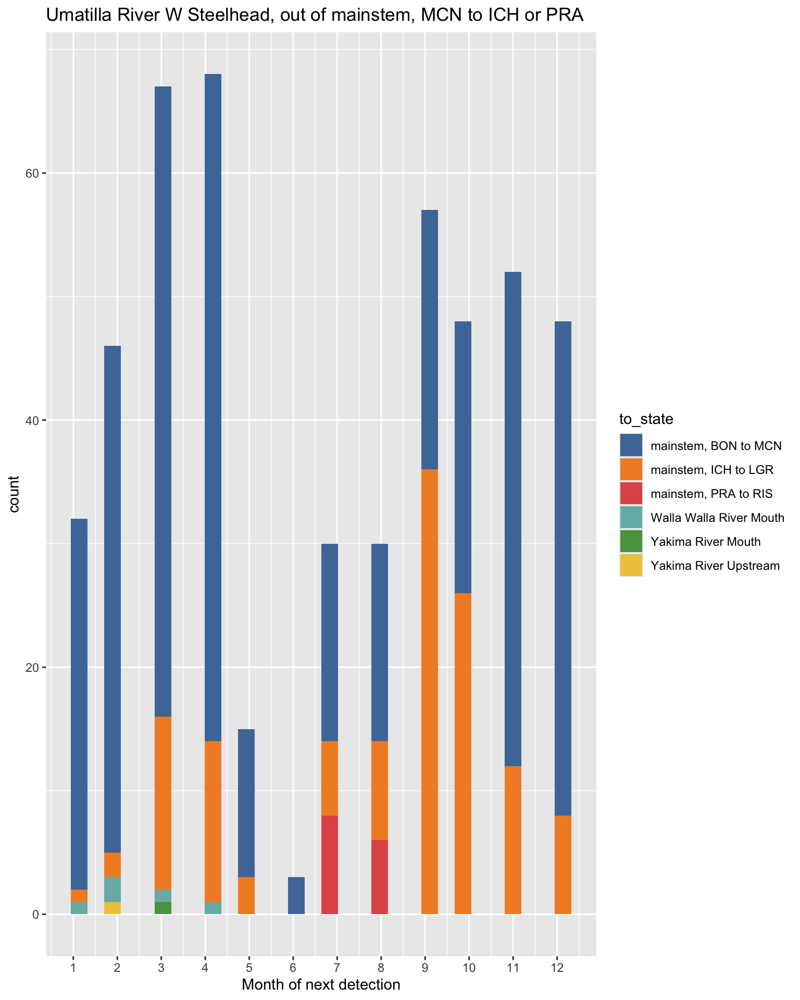
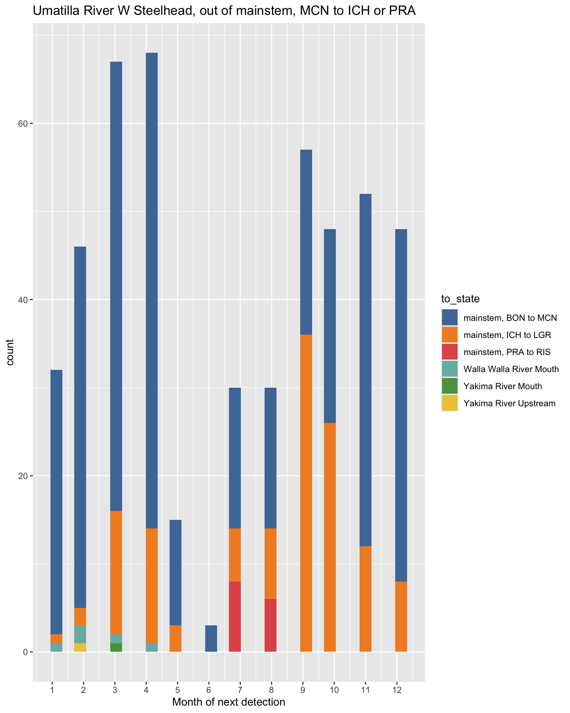
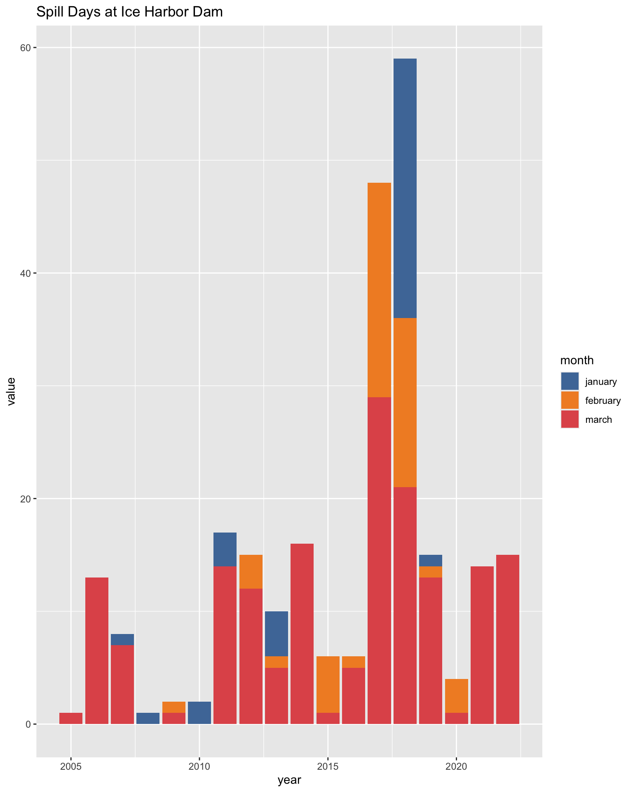
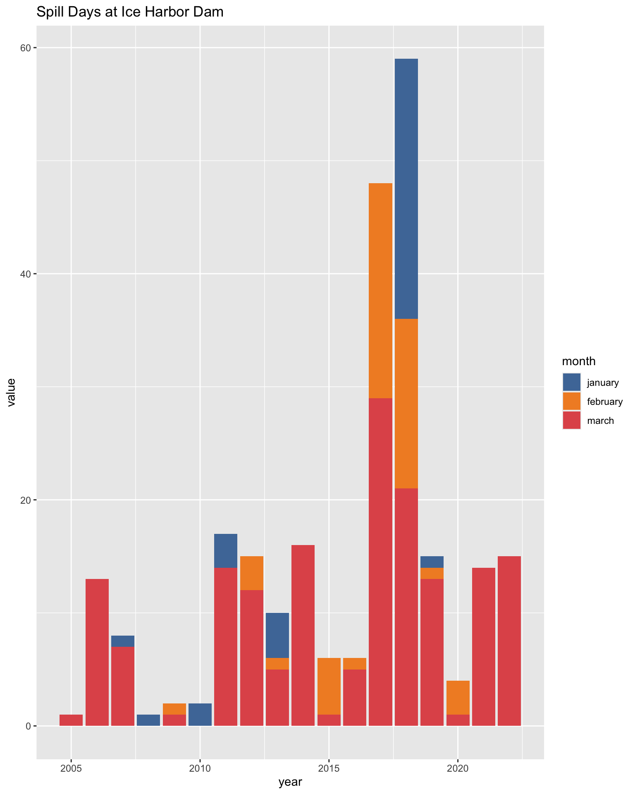
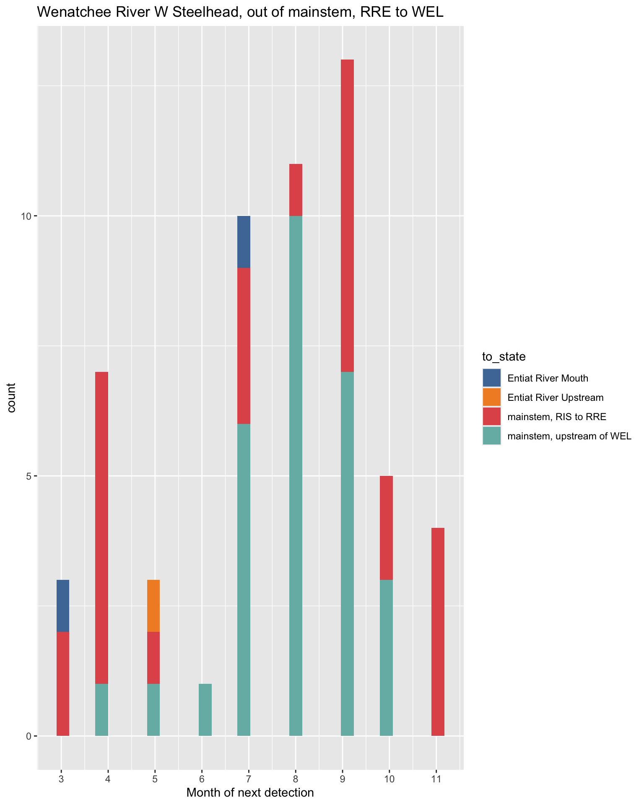
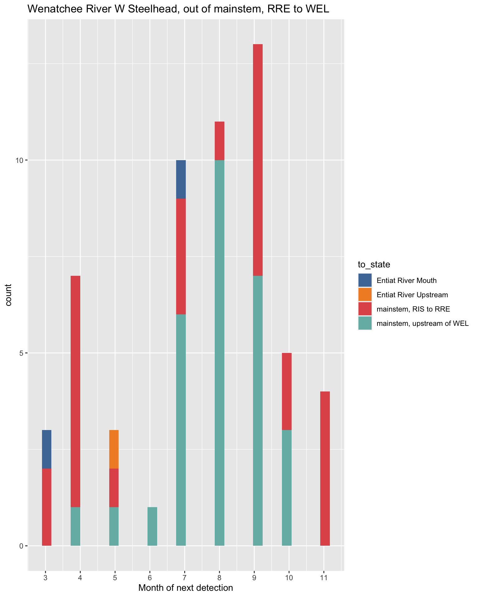
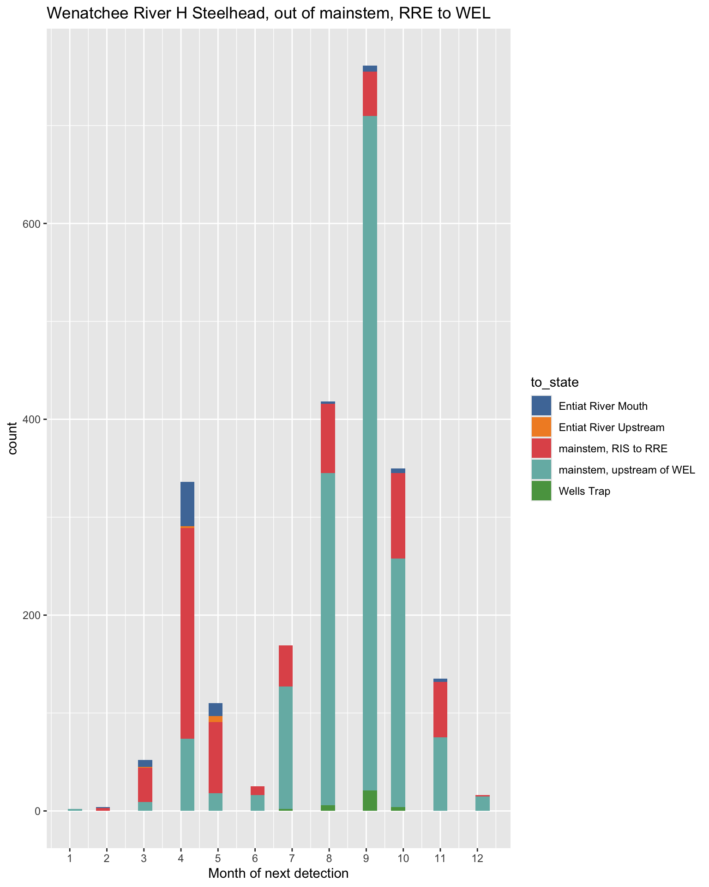
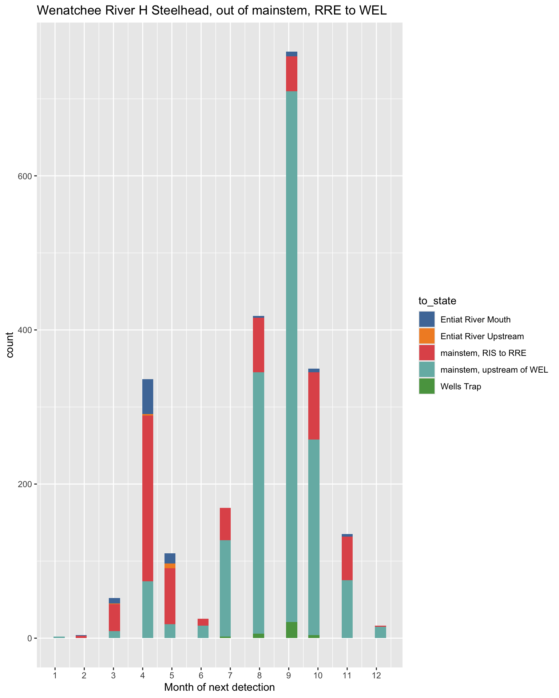

Spill days: Winter vs. March
Markus Min
2024-08-29
Description
This page compares modeling post-overshoot fallback as a function of winter spill (Jan/Feb/Mar) vs. as a function of only March spill. Richins and Skalski (2018) examined the relationship between the number of days of spill during January, February, and March and fallback rates to natal tributaries and found no relationship between fallback rates with January or February spill, but did find a relationship between fallback rates to some tributaries and March spill.
NOTE: These are results where we still have both a random effect of year and an effect of winter spill days on post-overshoot fallback movements. I am currently running the updated models where we have dropped the random effect of year for these movements, and will update these results when they are ready. I am hoping this will fix the poor fits to data that we currently see for some movements.
Movement timing and spill patterns
To determine if modeling the effect of spill from different time periods makes sense, I first set out to answer two questions:
- What is the timing of movements for fish out of overshoot states? Examining movement timing allows us to estimate roughly when fish are moving, which could tell us what spill they are more likely to be experiencing (and what spill they are definitely not).
- How much variability is there in spill in different periods of the year? If there is not enough variability in spill between different years, then it will not be a good predictor.
In the plots below, I show movement timing out of the first post-overshoot state for different populations on the left, and the number of days of spill in different winter months on the right. Movement timing for these plots is shown as the month of next detection for fish, following overshoot. As I am only showing fish that were detected following overshoot, this necessarily excludes all fish that next moved to the loss state (as we cannot estimate timing of movement into the loss state). For all fallback movements, this typically means detection at a tributary site. As such, we do not know exact movement timing, but if we assume that fish do not typically hold in mainstem states during their fallback migration, we can assume that this is roughly when fallback is happening.
My notes on the plots below:
- For all origins, post-overshoot fallback movements are typically happening in March or April. There is some post-overshoot fallback occurring in January and Februray, but it is typically less than in March or April (there is considerable variability between populations for the degree of this difference). There is a good amount of post-overshoot fallback also happening in the late summer/fall, but upon closer inspection of the data (not shown) most of these movements are actually followed by the re-ascension of the post-overshoot dam (although there is some fallback to the natal tributary during this time).
- Winter spill is distributed across months at the Columbia dams (McNary, Priest Rapids, Rocky Reach, and Wells). At the Snake River Dams (Ice Harbor and Lower Granite), most winter spill is happening in March, with a few exceptional years. For fallback movements on the Snake River, this indicates that modeling post-overshoot fallback as a function of all winter or only March spill won’t make a big difference, since they’re more or less the same.
- Given this, I chose to compare the effect of all winter vs. only March spill on post-overshoot fallback.
 

 
 
 

Winter vs. March spill
In each of the plots below, I show the results for the effect of spill days on post-overshoot fallback when spill days are modeled as winter (left) or March only (right).
Overall, there doesn’t seem to be much of a difference between modeling spill as winter days vs. March only days.
Middle Columbia
Effect of days of winter spill (left) and March spill (right) on post-overshoot fallback at McNary Dam for Deschutes River Steelhead.
Effect of days of winter spill (left) and March spill (right) on post-overshoot fallback at McNary Dam for John Day River Steelhead.
Effect of days of winter spill (left) and March spill (right) on post-overshoot fallback at Priest Rapids Dam for John Day River Steelhead.
Effect of days of winter spill (left) and March spill (right) on post-overshoot fallback at Ice Harbor Dam for John Day River Steelhead.
Effect of days of winter spill (left) and March spill (right) on post-overshoot fallback at McNary Dam for Fifteenmile Creek Steelhead.

Effect of days of winter spill (left) and March spill (right) on post-overshoot fallback at McNary Dam for Umatilla River Steelhead.
Effect of days of winter spill (left) and March spill (right) on post-overshoot fallback at Ice Harbor Dam for Umatilla River Steelhead.
Effect of days of winter spill (left) and March spill (right) on post-overshoot fallback at Priest Rapids Dam for Umatilla River Steelhead.
Effect of days of winter spill (left) and March spill (right) on post-overshoot fallback at Priest Rapids Dam for Yakima River Steelhead.
Effect of days of winter spill (left) and March spill (right) on post-overshoot fallback at Ice Harbor Dam for Yakima River Steelhead.
Effect of days of winter spill (left) and March spill (right) on post-overshoot fallback at Priest Rapids Dam for Walla Walla River Steelhead.
Effect of days of winter spill (left) and March spill (right) on post-overshoot fallback at Ice Harbor Dam for Walla Walla River Steelhead.
Upper Columbia
Effect of days of winter spill (left) and March spill (right) on post-overshoot fallback at Rocky Reach Dam for Wenatchee River Steelhead.

Effect of days of winter spill (left) and March spill (right) on post-overshoot fallback at Wells Dam for Wenatchee River Steelhead.
Effect of days of winter spill (left) and March spill (right) on post-overshoot fallback at Wells Dam for Entiat River Steelhead.
Snake River

Effect of days of winter spill (left) and March spill (right) on post-overshoot fallback at Lower Granite Dam for Tucannon River Steelhead.